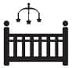

Dikkat aşırı huzur: Bebek odası
Eminim sen de bebeğinin yeterince geniş, masmavi ya da pespembe, tüllerle donatılmış, yumuşacık, ışıl ışıl bir odası olsun istiyorsun. Tabii bunun için evinizde bir bebek odası bulunması ve bu iş için kesenin ağzını bir miktar açman gerekiyor. Dekorasyon dergilerinde gördüğün o masallardan çıkmış bebek odalarına sahip olmak içinse bir miktar değil, keseyi ters çevirip silkelemen lazım. Çünkü mobilya sektöründe öyle markalar var ki, bazen bir tane beşik, yemek odası+yatak odası+oturma grubunu bir arada veren düğün setlerini sollayıp geçebiliyor.
 Ben ne yaptım?
Ben ne yaptım?
Dekorasyon ve bebek dergilerine reklam veren pek çok bebek mobilyacısının sitesini ve bazılarının mağazasını gezip fiyat aldım. Hepsi şunu iddia ediyor: Bizim ürünümüz kaliteli, uzun süre kullanabilirsiniz. Bidakka yaaa, ne kadar uzun süre. Çocuklar üç yaşına geldiklerinde bu bulutlu, çiçekli ya da ayıcıklı odaları beğenecekler mi sanıyorsun. Beşikten çıkıp daha hareketli bir oda isteyecekler ve daha fazla hareket alanı yaratmak gerekecek. Hatta işi dördüncü yaşa uzatırsak muhtemelen odalarının sevimliliğinden utanıp arkadaşlarını bile davet etmeyecekler, çünkü onlar bebek değiller, abi ya da ablalar artık. O yüzden mobilyanın dayanıklı olmasına çok takılmadım.
Mobilyacıların söyledikleri bir diğer şey şu: Bu beşikler büyüyebilen beşik. Yani, bir süre beşik olarak kullanıyorsunuz, daha sonra yatağa dönüşüyor. Başlangıçta iyi fikir gibi geldi, fakat sonra öğrendim ki büyüyebilen beşiklerin sallanma özelliği yokmuş. Fikrimi hemen değiştirdim ve sallanan beşik aldık. Ben bebeğimi sallanmaya alıştırmayacağım dersen bilemem, ama gece uyandığında beşiği azıcık sallamak durumu kurtardığı için, sallanan beşikleri şiddetle tavsiye ediyorum.
Bir başka konu ise, mobilyaların yapımında kullanılan kimyasallar. Bebek mobilyası için kanserojen madde içermeyen organik boya kullandıklarını iddia ettiler, sertifikalarını gördük, ikna olduk.
Önce bebek odası için neye ihtiyacım var, onlara karar verdim. İki adet sallanan beşik, bir adet gardırop, bakıcı için ya da bebeğin yanında yatmak gerekirse diye bir adet tek kişilik yatak, bir şifonyer ve bir adet sallanan sandalye. Sallanan sandalyeyi o zamanlar çok önemsemiş ve mutlaka olmalı diye düşünmüştüm. Şimdi çok gereksiz olduğu kanısındayım, çünkü birkaç ay kullandık, şimdi üstünde havlu kurutuyoruz. Elimdeki listeyle mobilyacıları dolaştım ve fiyat topladım. Sadece marka oldukları için aynı mobilyayı (tasarımı dahi aynı) iki üç kat fazla fiyata satan yerler var. Sonunda Siteler’de bir mobilyacıyla anlaştım ve hem çok keyifli, hem kaliteli hem de uygun fiyatlı bir bebek odamız oldu. İhtiyacımız olduğunda gelip kırığımızı çıkığımızı da düzelttiler sağ olsunlar.
Name içinse çok daha pratik, taşınabilir, portatif bir beşik aldık. Bu beşiğe bir de cibinlik taktırdım ki, abileri Name’ye oyuncak hediye etmesinler. Beşiği açık bulduklarında ellerine geçen bütün oyuncakları beşiğe atıyorlardı.
 Püf Noktaları
Püf Noktaları
- Neye ihtiyacın olduğunu belirle. Örneğin, erkek çocukların çok fazla kırışacak kıyafeti olmuyor, dolayısıyla gardırobun elbise askılığının bulunduğu alanı daha dar tutabilirsin.
- En önemli mevzu bence şu: Eğer bir çocuk odası yapacaksan, mobilyayı doğumdan iki ay önce al ve odanın camını kış da olsa iki ay boyunca açık tut. Çünkü yeni mobilya kokusu iki ayda ancak odayı terk ediyor. Çekmeceleri ve dolap kapaklarını da açık tut ki, içlerindeki koku da dağılsın.
- Beşiğin kenarlarına koruyuculu nevresim takımlarından al. Ben bir tarafını açık bırakmıştım. Bir gece kalktığımda Tuna’nın bacaklarını beşiğin parmaklıklarından sallanırken buldum. Biraz daha büyüdüklerinde beşiğin içinde kendilerini oradan oraya atarak oynadıkları için süngerler ve bezler yardımıyla ağızlarını ve kafalarını çarpabilecekleri her yeri kapladım.
 Sıkıcı Tarafı
Sıkıcı Tarafı
Mobilya kokusu gerçekten iki ayda ancak çıkıyor.
 Eğlenceli Yanı
Eğlenceli Yanı
Bebeğiniz eve geldiğine odanın içine dolan o bebek kokusu muhteşem. Ama kısa sürüyor, kaka ve çiş kokusu bir müddet sonra olaya hakim oluyor.